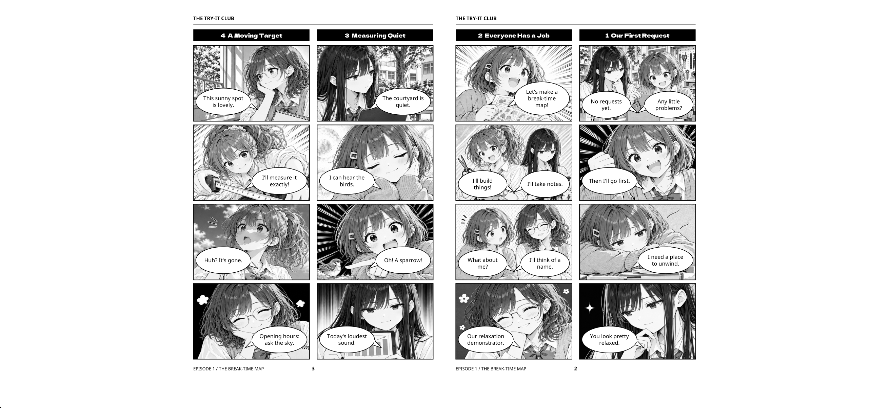
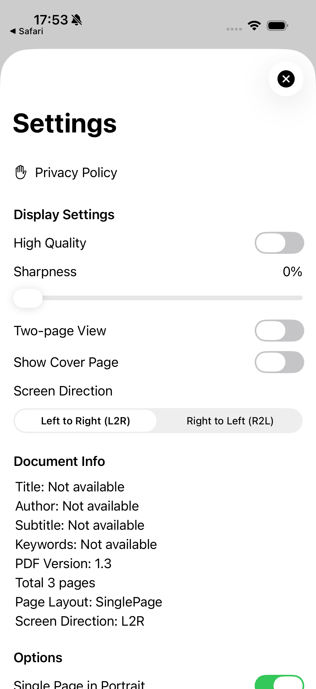

問題
從右到左的 PDF 可能會以錯誤的順序顯示頁面或滑動方向。
從右到左查看 PDF 和日文書籍的檢視器
MihirakiPDFViewer 是一個簡單的 PDF 檢視器，專為 從右到左的書籍和日本出版物。它讀取頁面 佈局和方向設置，然後讓你平滑切換 在單頁和兩頁檢視之間。

標準 PDF 檢視器並不總是從右到左顯示 按照您期望的方式閱讀書籍或兩頁 PDF。 MihirakiPDFViewer 讀取文檔設定並在流程中呈現頁面 這與這本書的閱讀方式相符。
從右到左的 PDF 可能會以錯誤的順序顯示頁面或滑動方向。
該應用程式會偵測方向和佈局設置，然後自然地排列跨度。
縮放、搜尋、高品質渲染和清晰度有助於處理小文字。
簡潔、集中的介面中的基本 PDF 閱讀控制。
根據 PDF 方向在 L2R 和 R2L 之間切換頁面移動，並從第一頁開啟由右至左的文件。
在直向閱讀區域中每次顯示一頁，較寬的 iPad 版面配置也適用。關閉此選項即可在直向閱讀區域中保留所選的雙頁設定。
搜尋 PDF 內的文字並捏合放大您需要的區域。
開啟需要使用者密碼的 PDF，解鎖後繼續閱讀。
從閱讀器開啟 PDF 大綱，並直接跳至所選章節。
您可在設定的「診斷」畫面中執行應用程式資訊、本機儲存空間和 PDF 算繪測試，或查看用於調查當機、速度變慢、操作及顯示問題的診斷日誌。測試結果包含測試時間、裝置型號名稱與型號識別碼、作業系統版本與應用程式版本。日誌不會記錄個人資訊、檔案內容、檔案名稱或路徑、搜尋詞與密碼，並會在讀取或記錄日誌時移除超過24小時的記錄。不會自動傳送任何資訊；只有您明確使用「分享」時，結果或日誌才會離開裝置。




適合任何想要在 iPhone 或 iPad 上從右到左閱讀 PDF 的人。
以更接近紙張的方式從右向左瀏覽書籍。
在兩頁視圖中保持左右頁面連線。
使用搜尋和縮放來檢查您需要的確切部分。
試試社 第1話 (Chinese (Traditional))
試試社 第2話 (Chinese (Traditional))
THE TRY-IT CLUB EPISODE 3 (English)
© 2026 小舞樓日和
本作品中，公開者擁有著作權或其他可授權權利的部分，依創用CC 姓名標示 4.0 國際授權條款（CC BY 4.0）提供。
https://creativecommons.org/licenses/by/4.0/
再利用時，請標示作品名稱、作者名「小舞樓日和」、原作品的公開來源及授權條款連結；若有修改，也請明確註明。
本作品在文字、圖片的製作及翻譯過程中使用了生成式AI。字型等由第三方擁有權利的素材，分別適用其各自的授權條款。本標示並不限制對不受著作權等權利保護部分的使用。
此 App 目前已在日本的 App Store 上架。點選此按鈕即可開啟該 App 在日本 App Store 的頁面。
可從設定頂端或「應用程式資訊」開啟隱私權政策。無論尚未選取 PDF 或正在閱讀，都不需要購買或登入。
可用儲存空間僅在本裝置上顯示。分享的診斷文字不包含儲存空間檢查、數值及其對整體結果的影響。日誌可能包含處理經過時間，但不包含原始系統運作時間。